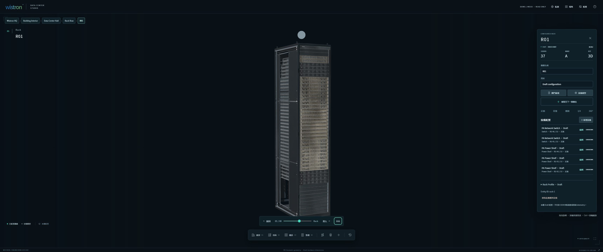

Wistron HQ · Phase 5A 視覺審查
這是依公開照片重製的建築展示。照片支持的外形、入口與立面節奏已重新建模；實際尺寸、完整窗數、背面、屋頂及景觀位置仍為 Draft。三種燈光是展示設計，不代表實際照明或營運狀態。
本環境沒有使用者先前提供的原始照片。下方為實際 Three.js 渲染，沒有生成照片、修圖或補畫。照片精準匹配不能列為 PASS。
交付說明 · 測試與效能 · 照片／素材來源 · 獨立目視審查
同一相機的 Before／After
Before 來自基準 160c0d6 的已提交實際截圖。After 使用相同位置、目標、FOV 43°、3440×1440 與 DPR 1。樓層與輪廓依新證據修正，因此物件的畫面占比也會改變。相機紀錄
 Before · 160c0d6
Before · 160c0d6 After · 本輪重製，未測繪 Draft
After · 本輪重製，未測繪 Draft本輪鏡頭與光照
完整鏡頭影片
實際畫布錄影，3440×1440；五種固定視角、三種光照、完整 360°、入口飛入與概念 Interior。保留實際入口遮罩，沒有插值或離線生成場景。
照片證據逐項比較
研究用新聞照片未取得再散布授權，因此不複製進 Repository。可開啟原始來源，與上方相應渲染並排查看。2025 入口照片（可見 158 門牌） · 2012 官方全棟照片，第 37 頁
| 項目 | 照片支持／本輪修正 | 限制 |
|---|
| 主要樓層節奏 | 四個上部玻璃層＋兩層石材基座；移除舊版缺少證據的九層節奏。 | 可見立面分層，不是測繪樓層或高度認證。 |
| 右翼 | 五個含窄窗的石材窗洞區，末端增加照片中可見的玻璃量體。 | 精確寬度、完整窗數未測量。 |
| 入口 | 中央凸弧玻璃帶、弧邊扇形雨棚與放射肋、燈壁、門把、門牌及品牌石。 | 以新聞近景判讀；尺寸、標誌字形與表面磨耗不是掃描資產。 |
| 立面／玻璃 | 真正切孔、內凹窗、分層窗框、斜角收邊、PBR 粗糙度與透射反射。 | 材質為通用 CC0／程序化資產，不是現場採樣。 |
| 屋頂／背面 | 封閉的 Draft 外殼與簡單屋面，避免不完整破洞。 | 沒有現況證據，未虛構 HVAC／冷卻設備；不列真實還原 PASS。 |
| 植栽／街道 | 曲線漸細枝幹、真實葉片 atlas、LOD、石材步道、灰色路面與排水細節。 | 位置與物種未確認；HDR 不是行善路照片。 |
保留的 PA Rack

HQ 夜景切換後返回 Rack；獨立環境與原始材質保留。完整功能回歸見測試報告。